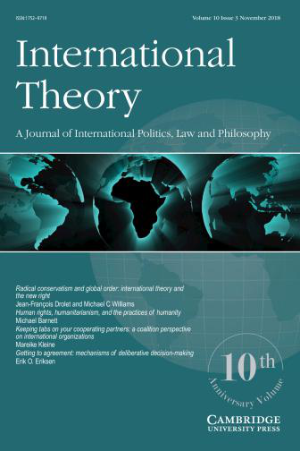

收录于合集 #理论研究 96个

编者按
传统的委托-代理理论能否说明国际组织中所有的授权问题？本文详细阐释了国际组织中类似于联合政府中的授权问题，以及成员国相应的制度性应对措施。
作品简介
【作者】 Mareike Kleine是英国伦敦政治经济学院欧洲研究所助理教授。研究兴趣为欧洲联盟、国际合作和公共政策等领域。
【编译】 吴皓玥
【校对】 周玫琳
【审核】 陈 勇
【排版】 杨 洋
【来源】 Kleine, Mareike. (2018). Keeping tabs on your cooperating partners: a coalition perspective on international organizations. International Theory, 10 (3), 350-373.

期刊简介
 《国际理论》（International Theory）是一本经同行评审的期刊，致力于促进有关世界政治的实证、法律和规范方面的理论学术研究。2018年该期刊影响力因子为1.263，在“国际关系”类别的91种期刊中排名第51。
监视合作伙伴：从联合政府的视角看国际组织
Keeping tabs on your cooperating partners: a coalition perspective on international organizations
Mareike Kleine
内容提要
本文认为，在国际官僚机构中施加单边影响力的机会造成了授权问题，这一问题与联合政府中的授权问题相似。联合政府中的政党互相怀疑彼此偏离了联合政府协议，于是利用初级部长和议会审查等机制来监督盟友在行政部门内的行动。同样，怀疑合作伙伴在官僚机构中滥用其单边影响力的国家，会利用类似于联合政府中的机制，以便彼此“监视”。作者用欧盟委员会的案例来说明这一观点的合理性。可以预期，这种国家间控制（interstate control）的授权问题可以得到更广泛的应用。本文对国际组织、国际授权和非正式治理的研究具有一定的启示意义。
文章导读
01
导言
国际组织是以国家为成员的正式实体，拥有常设秘书处、官僚机构或其他形式的常设行政机构。研究国际组织的学者特别关注 国家及其行政机构之间 的授权（delegation）问题。然而作者认为，学界的这种关注可能会掩盖在 国家自身 之间 出现的其他授权问题。这两种授权问题的区别在于，前者基于国家与国际官僚机构之间的信息不对称，而后者则源于国际组织中成员国之间的信息不对称。 本文的中心论点是，国家间控制（interstate control）问题及其可能的制度性解决措施在国际组织的运作中发挥重要作用。 为此，本文利用来自联合政府研究文献的理论模型对国际组织研究中流行的委托-代理（principal- agent）方法进行了补充。国际组织中存在大量的国家间控制问题，这一论述有两个实证意义。首先，它意味着国家间控制机制将会出现，并被用来应对国家滥用其单边影响力损害其他国家的企图。其次，与集体控制机制相比，国家间控制机制存在于官僚机构内部而非外部，并有助于消除成员国之间的信息不对称。这篇文章使用了欧盟委员会的例子来说明这些含义。作者建议把她的论述理解为对一种理论的可信性调查，该理论承诺对国家和国际官僚机构之间的关系进行更现实的分析。因此，本文试图对至少两个研究领域（国际授权和非正式治理）做出贡献。
02
超越“官僚偏差”：“国家间控制”的问题
尽管将委托-代理模型应用于国际关系学科有利于阐释国家与国际官僚机构之间的关系，但该模型忽视了由于国家间相互影响而产生的低效。作者把委托- 代理问题简要陈述如下：雇主打算委派一些任务给雇员，但雇主和雇员的利益不完全一致，如果有机会，雇员不会以符合雇主最佳利益的方式行动。考虑到这个问题，雇主试图减少信息不对称，并设计使他们利益一致的机制。许多学者认为，与雇主一样，国家会考虑到这种授权问题，并通过各种控制机制使官僚机构的动机与其共同目标一致，从而规避这种官僚偏差（bureaucratic drift）。但是将国际政治的情境与工作场所类比有其局限性，因为无论是委托人还是代理人，都不是康德意义上的具有自我决定能力的自主之人。国际政治中的委托人通常由两个及以上的具有异质偏好和讨价还价权力的国家组成；官僚机构也是可渗透的结构，国家有大量机会 从内部 操控官僚机构的利益和策略。如果接受委托人和代理人都不是哲学意义上的自主行为体这一前提，那么委托- 代理模型在国际组织中的应用就产生了新的含义。既然对代理人的控制程度视乎国家间偏好的异质性而定，那么就会出现这样的情况：具有异常偏好（outlier preferences）的国家永远不满意最终实现的实际控制程度。这些国家有动机违背当初关于使用外部集体控制机制的协定。这些国家还可能会绕过这些机制，利用单边影响力弥补其在控制官僚机构上所感知的差距。当国家使用单边影响力补充或代替外部集体控制时，上述情况对我们理解国际组织中的授权问题具有重要意义。第一，官僚偏差的问题（即官僚机构拥有获取私人信息的能力）没有委托- 代理模型预测得那么严重，因为国家拥有从内部控制代理人的其他途径。第二，在一定条件下，在国家对官僚机构施加单边影响力的过程中，可能会在国家之间产生新的信息不对称。这些不对称造成了一个新的授权问题，对国际合作的持久性构成了显著威胁。 如果各国不知道自己的合作伙伴在国际官僚机构中发挥单边影响力的范围，它们就会做最坏打算。当每个国家不断地尝试抵消自己推测的其他国家的支配地位带来的危害时，一种低效的影响力竞赛有可能会出现。这种竞赛类似于在不完全信息下的军备竞赛，有浪费资源和损害合作的危险。作者把这种情况称为“国家间控制”问题。
03
监视合作伙伴
本节讨论国家间控制问题的两个特征——合作的脆弱性与官僚机构内国家对彼此行动信息的匮乏——与联盟的形成和运作问题的相似性。联盟的特征是其持续时间不长。因此，比较政治学的文献提出了联合政府能持续多久以及为什么会持续的问题，并讨论可以让盟友合作更持久的制度性解决方案。 1、作为联合政府的国际组织 为了组成联合政府，各政党必须就其在立法任期内希望实现的共同目标（联盟协议）以及政党代表的职务分配（例如财政、环境）达成共识。因此，议会中联合政府的支持者不仅将权力授予本党的内阁部长，还授予盟友的内阁部长。然而，联合政府中的政党在控制盟友的内阁部长上面临困难。各党在各自部门中执政的信息不对称为所有盟友提供了机会，使政府政策偏离联合政府协议中达成的共识。如果考虑国际官僚机构中单边影响力的可能性，同样的逻辑也适用于国际组织。与联合政府类似，国际组织通过一项国际条约建立，该条约确定共同目标，并将其执行委托给一个国际官僚机构。当各国对彼此在官僚机构内的活动了解甚少时，它们不得不怀疑合作伙伴在损害他国利益的情况下滥用其单边影响力，此时就会出现问题。 **国家怀疑单边影响力被滥用这一事实，而非单边影响力的存在本身，导致了国家间控制问题。
** 2、监视联合政府伙伴 比较政治学的一些文献意识到了影响力竞赛对政府稳定的威胁，并发现存在一些机制可以减少信息不对称，允许合作伙伴监视彼此在官僚机构中的行动。一个直接的方法就是盯梢（shadow）盟友。政党在对立部门设立了“初级部长（junior ministers）”的职位，初级部长可以近距离监督高级部长的行动，以防止他们在各自的部门内建立私人信息。在联合政府和国际组织中授权问题的相似性表明，国际官僚机构中也可以设置职能与初级部长相似的职位。内阁面临的时间和资源限制阻碍了部长（尤其是较小政党的部长）采用上述方法更直接地监督其合作伙伴。这时，例如委员会监督或质询时间（question time）的议会审查机制也可以用来解决部长自主权带来的问题。 **盯梢合作伙伴是一个主要为大国和富国提供的选择，小国则可以利用既有审查机制了解其他国家单边影响力的范围。
** 3、联合政府和国际组织的不同 联合政府通常有届期，而国际组织没有。此外，议会制民主国家政府过渡过程的交易成本较低，而国际合作的解体往往代价高昂。因此，有人可能会反对说，各国可能一开始就会避免将权力授权给国际组织。应该指出的是，威胁终结联合政府是一种在国内情况下也并不总是可信的极端措施。此外，国际组织通常比联合政府更持久这一事实意味着各国应该关心它们的声誉。如果国家能设法调整它们之间非正式的信息不对称，我们可以预期各国将达到一种平衡，即避免滥用单边影响力损害合作伙伴，以避免报复和随后失控的影响力竞争。有人还可能反对说，国家对国际官僚机构施加单边影响力，比联合政府中的一个政党越过联合协议对一个部门施加影响力更为困难。然而，这是程度上的差异，而不是性质上的差异。而且关于非正式治理的文献表明，不应低估国家在绕过正式规则寻找合法或非合法途径上的创造力。总而言之，联合政府和国际组织中授权问题的相似性表明，国家可以设计国家间控制机制，以便在国际组织内相互“监视”彼此的单边行动。这一理论表明， 这些机制是针对侵犯其他国家利益的单边影响力的滥用而产生的，它们存在于官僚机构内部而非外部。
04
欧盟内外的国家间控制问题
国际组织内的国家间控制问题是真实存在的，并带有侵蚀合作的风险。这个问题在欧盟的例子中表现得最为明显。各成员国在欧盟委员会内部的权限混乱引发了一场争夺单边影响力的竞赛，这场竞赛险些失控并使欧盟官僚机构陷入瘫痪。 1、从委托-代理的视角看欧盟委员会 欧盟委员会在议程设置和执行方面的权力经常被解释为标准的委托- 代理模式，根据该模式，成员国，即委托人，将权力委托给一个自主的实体，即欧盟委员会。从委托- 代理的视角来看，这种授权行为所导致的主要授权问题是官僚偏差，即委员会滥用其权力损害成员国最大利益的可能性。然而，各国可能会预见到这个问题，因此设计了集体控制机制，以使委员会的动机与本国一致。在这些集体控制机制中，有所谓的“欧盟授权立法委员会”（comitology committees），它由国家官员组成，监督欧洲委员会的行政职能。
2、委员会自主权的限制和单边影响力的机会 实际上，欧盟委员会是一个不能免受外部和自身内部结构影响的机构。单边影响力有两种渠道：资源和人员。由于委员会可以利用部分的自身资源体系，因此国家通常通过招募志同道合的职员并奖励对其优待的决定，在委员会内部获得单边影响力。成员国在欧盟委员会内部施加单边影响力的第一种方式是通过政治层面的吸纳。各国有意提名与自己利益相同、且易于通过职业生涯激励来控制的委员，并将“它们的”委员战略性地安置在自己特别敏感的领域。单边影响力也渗透到欧盟委员会的行政层面。公共机构执行偏向性政策的压力源自委员办公室，即“内阁”（此处的“内阁”勿与政府内阁混淆）。委员内阁在其中作为政治层和行政层的传输者。委员内阁通常由委员同国籍的人组成，他们来自国家行政部门和委员政党，并成为了本国政府获知公共机构活动的渠道。如果有必要的话，国家就会收集针对政策制定的反对意见。
3、影响力竞赛和国家间控制问题 缺乏关于合作伙伴单边影响力的范围和目的的信息，可能会引发代价高昂的影响力竞赛，从而缓慢侵蚀合作。这种情况在欧盟委员会中发生过好几次。上世纪60年代，欧盟委员会成员国之间最重要的冲突在于，农产品市场组织到底应是干预主义还是自由主义的。几乎与此同时，成员国开始担心自己在委员会中的影响力。例如，德国农业部部长向同事抱怨说，其他国家在欧盟委员会内部仍与本国公民保持密切联系，担心这会给其合作伙伴提供不公平的优势。由于对其他国家的行动缺乏足够的信息，德国国务秘书建议效仿，从而参与一场单边影响力竞赛。1985年至1995年，德洛尔的政策立场和行为引发了人们对他滥用职权、追求法国国家利益的批评。对于法国在欧盟委员会内部影响力日益增强的看法，其他委员的反应是加强自己的内阁，从而加强对欧盟委员会公共机构的控制。因此，委员的私人工作人员总数在这段时间内急剧上升，失去控制。总之，欧盟委员会有许多国家间控制问题，其根源在于成员国对部分行政部门的单边影响力。当单边影响力与信息的缺乏结合在一起时，有可能通过低效的影响力竞争使欧盟官僚机构瘫痪。
05
欧盟委员会中的国家间控制机制
与联合政府相似的国家间控制机制也存在于欧盟委员会中。 1、“初级部长” 盟友可以盯梢高级部长，以监视其可能滥用自由裁量权的行为。在欧盟委员会初期，就已存在与联合政府的“初级部长”功能类似的职位。20世纪60年代，每个委员对一项特定政策负主要责任，并对一或两个以上的政策领域负辅助责任。60年代后期工作量逐渐增加后，委员无法承担超出其核心职权范围的责任，这种机制变得最终失效。几乎在同一时间，委员会内的单边影响力竞赛加速。类似的机制也出现在欧盟委员会的政治和行政层之间。20世纪60年代，委员以及委员管辖范围内最为资深的总司长不应同属一国籍，总司长及其副手也一样，这已成为一种非正式的规范。如果这一规范仅仅是为了在各司的高级职级之间实现某种国籍平衡，同样的准则也应适用于委员和副总司长之间，而实际情况与此相反。因此，这种机制的主要功能是防止关于国家单边影响力范围的私人信息在官僚机构的高层中积聚。20世纪90年代的行政改革也起到了类似作用。委员内阁主任或其副手不能和委员同属同一国籍，委员内阁必须有至少三个不同国籍。尽管这些改革并没有阻止委员给他们所负责的政策打上一定的民族主义烙印，但能让其他人知道这种政策偏袒的范围。
2、“议会审查” 一些国家在监督委员会高层的行动方面受到限制，极大的工作量使得委员有充分的机会在拟定议题时避免近距离审查。因此，委员会中存在类似联合政府中“议会审查”机制的功能。在向委员会提交草案文本之前，委员内阁成员至少有两次会议机会通过公开辩论审查委员们的行动。虽然内阁层面的辩论可能是服务于政策协调的目的，但这些辩论也被用来审查单边影响力的程度及其对其他会员国可能产生的政治影响。总之，委员会内部的一些机制类似于联合政府的监督工具，允许成员国限制国家间控制问题。通过减少在彼此单边影响力范围和目的上的信息不对称，国家能够建立克制的声誉。
06
讨论与结论
有人可能会说，各国会预先考虑到国家间控制问题，并设计出一开始就阻止国家施加单边影响力的机制。然而，制度设计不会是完美的。 如果国家无法预见和阻止所有施加单边影响力的机会，那么我们就面临一个比官僚偏差更重要的问题，即国家间控制问题在何时何地出现。 所有的国际组织都必然会出现国家间控制问题，还是这个问题仅限于欧盟？ 假定任何国际组织原则上都易受单边影响，那么当国家忽略其合作伙伴在官僚机构内活动的性质和范围时，国家间控制问题就出现了。从理论角度看，这一问题并不限于特定的国际组织。然而，可以认为，信息不对称是正式制度框架的产物。在欧盟委员会或联合国总秘书处这样庞大复杂的官僚机构中，作者预计各国更易隐藏其行动的真实目的，因而更难以监督其合作伙伴的活动。在处理问题较少和行政机构较精简的国际组织中，国家单边影响力的范围和目的应更为明显。 单边影响力是大国的特权吗？ 国家要想对官僚机构施加单边影响力，就必须对集体控制的实际水平感到不满。而这种情况发生在它们的偏好相对于成员国的平均值更为极端的时候。当欧盟成员国之间日益紧张的关系转化为欧盟委员会内部的裂痕时，我们看到了这种情况的发生。这一冲突与更大的对官僚机构的单边控制的竞争密切相关。虽然所有国家都可能制定鼓励措施来加强单边影响力，但它们并非都有能力这样做。如上所述，小国利用现有的审查机制要比在其他部门盯梢其伙伴的行动更容易，但效率较低。我们需要对单边影响力和审查机制的类型进行更多的研究，但似乎可以有把握地说，国家间控制问题主要在大国之间展开。
译者评述
委托- 代理理论是研究国际组织的一个重要的分析方法，其侧重点在于研究国家和国际组织之间的互动，从而解释国际组织中的授权问题。本文则揭示了国际组织的委托人之间存在的授权问题，补充了这一理论。通过与联合政府的类比，作者指出，“国家间控制”这一授权问题的根源在于，拥有异常偏好的国家对官僚机构施加单边影响力，且同时其盟友缺乏相关的信息。而国际组织中也存在与联合政府作用相似的“初级部长”和审查机制，以避免这一问题可能引发的影响力竞赛。作者在最后也探讨了这一理论对不同国际组织的解释力。她假定国家在国际组织中的单边影响力可能是普遍存在的，但是其他成员国对这种影响力的监督难度并不相同，较为精简的机构更容易监督国家间控制问题。译者认为，不同的国际组织中是否存在单边影响力以及这种影响力的衡量也是值得深入探讨的问题。另外，本文的前提假定在一定程度上忽略了现实中国际组织可能拥有的强大自主性，而这正是另一种研究视角——社会学制度主义可以补充的方面。
参考文献：
张建宏、郑义炜：《国际组织研究中的委托代理理论初探》，《外交评论》2013年第4期，第143-154页。
 文章观点不代表本平台观点，本平台评译分享的文章均出于专业学习之用,
不以任何盈利为目的，内容主要呈现对原文的介绍，原文内容请通过各高校购买的数据库自行下载
文章观点不代表本平台观点，本平台评译分享的文章均出于专业学习之用,
不以任何盈利为目的，内容主要呈现对原文的介绍，原文内容请通过各高校购买的数据库自行下载

好好学习，天天“在看”

国政学人
支持学术公益与知识传播
微信扫一扫赞赏作者 __赞赏
已喜欢，对作者说句悄悄话
取消 __
发送给作者
发送
最多40字，当前共字
上一页 1/3 下一页
长按二维码向我转账
支持学术公益与知识传播
受苹果公司新规定影响，微信 iOS 版的赞赏功能被关闭，可通过二维码转账支持公众号。